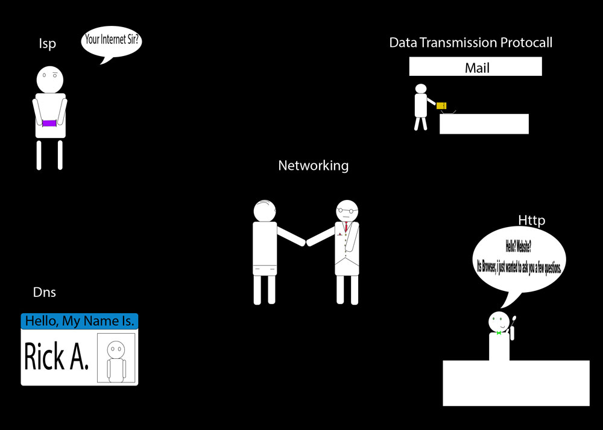

Networking
Noble Richardson

the action or process of interacting with others to exchange information and develop professional or social contacts. "the skills of networking, bargaining, and negotiation" the linking of computers to allow them to operate interactively. "the demand for wireless networking is increasing rapidly" -communication with a groups of people to strengthen your company through user interface.
Data transmission protocol
The transfer of data to a point-to-point or point-to-multipoint communication channel The data is represented in an electromagnetic signal; electric voltage, radio waves, microwave, infrared signal.
analog is a transmission method of conveying images, voice, data, or video info. Bitstream uses pulse-code modulation or source coding The source coding and decoding is carried out by codec equipment.
HTTP
HyperText transfer protocol: secure Communicates between browsers and websites
ISP
Internet service provider: A company that provides users access to the internet.
DNS
Domain name system: Internet's equivalent to a phone book Domain names translate to ip addresses which help computers and machines locate websites.
RESOURCES
https://www.webopedia.com/TERM/H/HTTP.html
https://en.wikiversity.org/wiki/Introduction_to_Networking
https://encyclopedia2.thefreedictionary.com/Data+transmission+protocol
https://www.wikipedia.org/